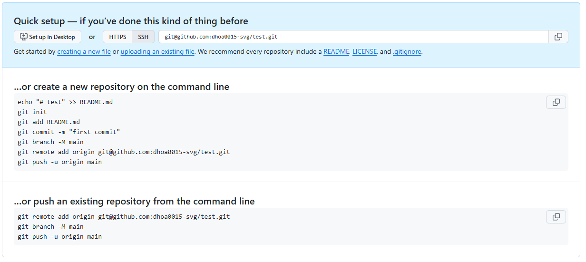
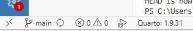
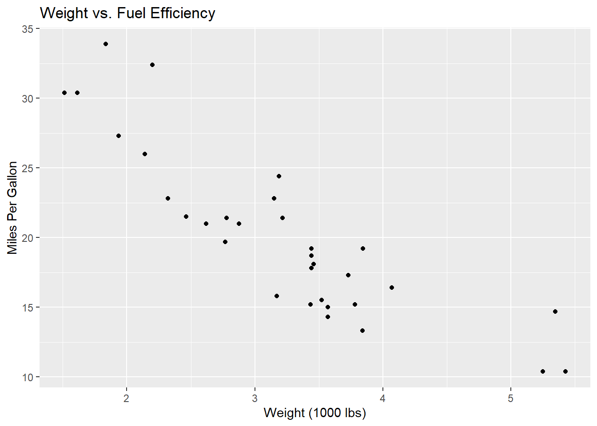

Assignment 2: Collaborative and Reproducible Practices
Git, Github and command line interface
1. Set up the repository locally on my computer
Suppose you have an existing local directory that is not yet under version control, and you want to start tracking it. For this project, I created a new directory named Assignment 2.
First, I opened RStudio and created a new project in this existing directory. This generated an Assignment 2.Rproj file, fulfilling the requirement to set up an R Project.
For the remainder of the workflow, I transitioned to the Positron IDE. Upon opening theAssignment 2 directory in Positron, the only existing file was the .Rproj file. I then created a new Quarto document, saved it as example.qmd, and rendered the file to generate the corresponding HTML output, which name is example.html
2. Initialize a local Git Repository and push to GitHub
Normally, in order to set up one project that is reproducible, we tend to follow these following steps:
- Create a GitHub repo
- Clone the repo locally
- Move all the files and folders from your existing project into this folder
- Stage, commit, push
However, to ensure a streamlined version control workflow and avoid redundant directory structures, it is often more efficient to initialize a Git repository locally before pushing it to a remote platform like GitHub. Because cloning a remote repository downloads an entirely new directory onto your local machine, doing so can sometimes lead to awkwardly nested project folders. By initializing Git in your local workspace first, you can seamlessly integrate version control into your existing project structure before syncing it with the remote server.
Github even explain on how to setup this repo using these git commands:
WarningAlways making sure you are in the correct directory
Whenever you open your terminal, the very first thing you need to establish is your current location. You can do this by typing pwd, which stands for print working directory. This outputs your exact path in the computer Make sure you are in the right folder for your project.
If you want to look around and see what folders are available to you, type ls to list the contents of that directory and how they organize in your computer.
Once you are oriented, use the cd (change directory) command to navigate step-by-step into your specific project folder.
Step 1: Command git init
First step to do to make our local file become a tracked git repository is to use git init
Syntax:
git init
This command will transform the current, standard directory into an empty Git repository so you can start saving versions of your files. It creates a hidden directory inside the project folder name .git
TipWhen to use
Use this when you are starting a brand new project and want to start tracking its files, or when you want to add version control to an existing un-tracked folder.
Step 2: Commnand git add
Now that your repository is initialized, the next step is to tell Git which files you want it to track. In our case, this includes your .Rproj file, your Quarto (.qmd) scripts, the generated .html reports, and any associated configuration files.
Syntax:
git add .
It takes your modified or newly created files and moves them into the staging area. Think of this like you are packing your files and getting them ready for the commit, but they haven’t been committed yet.
$ git add <your_file_name>
# To see the result, you run `git status`:
$ git status
# Changes to be committed:
# (use "git rm --cached <file>..." to unstage)
# new file: analysis.qmdStep 3: Command git commit
Once your files are in the staging area, you need to permanently record these changes in your repository’s history. This creates a snapshot of your project exactly as it looks right now.
Syntax:
git commit -m "your_commit_message"
$ git commit -m "Initial first commit in local repository"
TipBest practices for commits
Always use the -m flag to write your message directly in the terminal. If you forget it, Git will open a text editor - Vim editor.
Keep your commit messages short but descriptive, always be specific and consider subjects of files you are commiting.
Step 4: Command git branch
Historically, git named the default branch master. To this day, the standard across the tech industry and GitHub is to name the primary branch main. We need to make sure our core branch name match this standard.
Syntax:
git branch -M main
This command forces Git to rename your current active branch to main.
$ git branch -M main
# If you want to check it worked, type:
$ git branch
# * mainStep 5: Command git remote
Right now, your repository only exists locally on your computer. To back it up and share it, you need to connect your local repository to the empty repository you created on GitHub. This command tells local Git to add a remote connection to this local repository.
Syntax:
git remote add origin "your_git_ssh_key"
Step 6: Command git push
The final step is to actually upload your committed files from your computer to your GitHub repository.
Syntax:
git push -u origin main
This command pushes your code up the origin connection we just established, specifically onto the main branch.
WarningWhy do we need a
-u flag?
The -u flag stands for upstream. You only need to type this the very first time you push a new branch. It links your local main branch to the GitHub main branch. For future updates, you can simply type git push and Git will remember where to send it.
3. Modify on new branch
Create testbranch and make some changes in example.qmd
To work on new features safely without affecting your main project, you should create a new branch. A branch is essentially an alternate timeline or an isolated workspace for your code.
Syntax:
git switch -c "newbranch_name"
This command actually does two things at once: it creates the new branch, and it immediately switches you into it, or in another word, it moves the repository HEAD to this branch as well.
TipCheck if it works
You can confirm this command actually worked by type git branch in the terminal. This command shows a list of branches and point to which branch are you in currently
$ git switch -c testbranch
# Switched to a new branch 'testbranch'
$ git branch
# format
# main
#* testbranchThere are other ways to create branches and navigate between branches as well. For example, one more command that does exactly what the previous one did is git checkout -b "branch_name". Additionally, you can do it step-by-step by first, create a new branch, and then swith to that branch to make changes on that newly created branch.
$ git branch "branch_name"
$ git switch "branch_name"
# Switched to branch 'branch_name'Once you have modified your file inside the testbranch, it is time to permanently record your progress. To ensure your updates are saved both locally on your computer and remotely on GitHub, you must complete the standard stage > commit > push workflow.
Execute the following commands to complete this process:
$ git add example.qmd
$ git add example.html
$ git commit -m "Create new testbranch and add instruction for these steps"
$ git push -u origin testbranch
# Output
Enumerating objects: 13, done.
Counting objects: 100% (13/13), done.
Delta compression using up to 8 threads
Compressing objects: 100% (9/9), done.
Writing objects: 100% (9/9), 5.33 KiB | 1.78 MiB/s, done.
Total 9 (delta 6), reused 0 (delta 0), pack-reused 0 (from 0)
remote: Resolving deltas: 100% (6/6), completed with 2 local objects.
remote:
remote: Create a pull request for 'testbranch' on GitHub by visiting:
remote: https://github.com/dhoa0015-svg/Assignment2_DucHoang_36558966/pull/new/testbranch
remote:
To github.com:dhoa0015-svg/Assignment2_DucHoang_36558966.git
* [new branch] testbranch -> testbranch
branch 'testbranch' set up to track 'origin/testbranch'.Create new folder and use --amend
To create a new folder inside our project repository, we can either use our computer’s file explorer manually, or we can create it directly using the terminal. The terminal command to make a new directory is mkdir > Syntax: mkdir "file_name"
$`mkdir data`
# Directory: C:\Users\ducho\OneDrive\MBA S1 Y1\ETC5513 - Collaboration\Assignment 2
# Mode LastWriteTime Length Name
# ---- ------------- ------ ----
# d----- 5/10/2026 1:54 AM dataAfterward, we simply need to copy or move our data files from Assignment 1 into this newly created data folder.
Sometimes, right after you finish the workflow and changes were commited, you realize you forgot something important. Instead of creating a messy, separate commit just for the forgotten files, you can use git command contaning --amend to moderately add more details to your previous commit.
Syntax:
git commit --amend --no-edit->git push --force origin "branch_name"
# First we stage our changes, along with adding new data folder and data file, i have modified qmd and html file as well,
# so i have also added these to the files that need amended.
$ git add example.qmd
$ git add example.html
$ git add data/
# Amend these previous changes
$ git commit --amend --no-edit
# 3 files changed, 264 insertions(+), 10 deletions(-)
# create mode 100644 data/36558966_Duc Hoang.csv
# Force push all these changes to remote repo
$ git push --force origin testbranch
WarningWhy do we need a
--force flag?
Because when we amended a commit that we had already pushed to GitHub, our computer’s timeline no longer matches GitHub’s timeline. A standard git push would be rejected. We must use the --force flag to explicitly tell GitHub to overwrite the old commit history with our newly amended version.
4. Merge branch and resolve merge conflicts
Modify file in main branch
When it comes to merging branches into the main branch, this is one of Git’s most powerful features as it allows users to work on different versions of a project simultaneously. Once we are satisfied with the changes on a branch, we can merge it back into main to incorporate those changes into the primary codebase.
WarningAlways check which branch you are working on
Because Git allows you to switch between branches, it is important to always be aware of which branch you are currently on before making any changes. Working on the wrong branch by mistake can lead to messy, unintended modifications that are difficult to untangle.
If you are using Positron, you can always check your current branch in the bottom-left corner of the editor window.

First, switch back to the main branch. This is necessary so that our next changes are recorded on main and not on testbranch.
$ git checkout mainOpen example.qmd and edit the same lines that were changed on testbranch, but write something different. The key is that both branches have touched the same part of the file, what will trigger a conflict.
After saving, stage and commit the change:
$ git add example.qmd
$ git commit -m "Update title on main branch"Then push to the remote so the main branch on GitHub also reflects this change:
git push origin mainAt this point, both main and testbranch have diverged, where they share a common ancestor commit but each has a different version of example.qmd. Git knows about this but has not yet tried to reconcile the two.
Merge testbranch onto main
TipMerge branches onto main
Make sure you are still on main branch when merging alternative branches onto main.
Syntax:
git merge <branchname>
Because both branches edited the same lines, Git cannot auto-merge them. It will print a message confronting about there was a conflict trying to merge these two:
$ git merge testbranch
# Output:
Auto-merging example.html
CONFLICT (content): Merge conflict in example.html
Auto-merging example.qmd
CONFLICT (content): Merge conflict in example.qmd
Automatic merge failed; fix conflicts and then commit the result.What the conflict markers look like
When a merge conflict occurs, Git pauses the merge and modifies the affected file directly to show you exactly where the problem is. Git has annotated the conflicting section with special markers:
<<<<<<< HEAD
Modification on main branch: Section 4. Merge branch and resolve merge conflict
=======
Modification on testbranch: Section 3: Modify on new branch
>>>>>>> testbranch- Everything between
<<<<<<< HEADand=======is what exists onmain(your current branch). - Everything between
=======and>>>>>>> testbranchis what exists ontestbranch.
Resolving the conflict
To resolve the conflict, edit the file to keep your preferred version, whether by clicking your editor’s shortcuts to accept specific changes, typing out a new combined version, or manually editing the text, and ensure you delete all three marker lines. Once you are happy with the final result, save the file and tell Git the conflict has been resolved by staging it.
$ git add example.qmdRunning git status again confirms there are no more unmerged paths:
Verifying on GitHub
Navigate to your repository on GitHub. You will see:
- The commit history on
mainnow includes commits from both branches, plus the new merge commit at the top. - The network graph shows the two branches diverging and then converging back into
main. - The file
example.qmdon GitHub reflects the resolved version you chose.
This confirms that the conflict was identified, resolved locally, and the clean merged result has been successfully published to the remote repository.
Merge conflicts are a normal part of collaborative version control. Understanding how to read conflict markers, choose the correct resolution, and complete the merge cleanly is an essential Git skill. The workflow here — merge → identify conflict → edit file → add → commit → push is the same regardless of how large or complex the conflict is.
5. Create annotated tag
We can mark any commit with a tag. This is done to create a named, permanent reference point in the project’s history. This is most commonly used to indicate a specific release or milestone (e.g. v1.0, v2.0-beta). Unlike branch names which move forward with every new commit, a tag always points to the exact same commit it was created on.
There are two types of tags in Git:
- Lightweight tags — a simple pointer to a commit, with no extra information.
- Annotated tags — store additional metadata such as the tagger’s name, date, and a message. These are preferred for releases as they provide more context.
To tag the merge commit on main as version v1.0:
Syntax:
git tag -a v1.0 <commit_hash> -m <message>
To fetch the commit hash, it is always best to use git log --oneline command, this asks Git to show us a list of past commits with their hashes on the side. Navigate to the merge testbranch to main, fetch out it hash and use it for the tag command.
$ git tag -a v1.0 e3f1a2b -m "Release version 1.0"
TipFlags information
-a v1.0creates an annotated tag named v1.0.-m "Release version 1.0"attaches a message to the tag.
Tags are not pushed to the remote automatically with git push. You need to push the tag explicitly:
$ git push origin v1.0You can verify the tag exists and inspect its details with:
$ git show v1.0
# Output:
tag v1.0
Tagger: Duc Hoang <dhoa0015@student.monash.edu>
Date: Mon May 11 21:11:57 2026 +1000
Release version 1.0
commit dac132969380cd09bbee5fde9e172d9553d0cd0e (tag: v1.0, origin/main)
Merge: 41c6793 1f5cc78
Author: Duc Hoang <dhoa0015@student.monash.edu>
Date: Mon May 11 17:43:22 2026 +1000
Merge testbranch into main, resolve conflicts by move Section 4 to after Section 36. Delete branch and review commit history.
Delete testbranch
When working with Git, branches are a powerful tool for keeping work organised and isolated. However, once a branch has served its purpose, as the changes have been reviewed, merged into main, and everything looks good, it is best practice to delete it. Keeping stale branches around can clutter the repository and make it harder to track what work is still actively in progress versus what has already been completed. Deleting a branch does not delete the commits or the history; those are preserved on main through the merge.
Since testbranch has been fully merged into main, it is no longer needed. We delete it in two places: locally and on the remote to keep the repository tidy.
- Delete the local branch:
Syntax:
git branch -d <branch_name>
$ git branch -d testbranch
# Output:
Deleted branch testbranch (was 1f5cc78).- Delete the remote branch:
Syntax:
git push origin --delete <branch_name>
$ git push origin --delete testbranch
# Output:
To github.com:dhoa0015-svg/Assignment2_DucHoang_36558966.git
- [deleted] testbranchYou can confirm it is gone by visiting your repository on GitHub where it should no longer appear under the “Branches” tab.
View the condensed commit log
To get a compact overview of the project’s commit history, it is useful to view the log in a condensed format.
By default, git log displays a full block of information for each commit: the full hash, author, date, and message The --oneline flag narrow this down to one line per commit, showing only the shortened hash and the commit message. This makes it much easier to scan through the history, identify a specific commit, or confirm that your recent actions such as merges, amendments, and tags have all been recorded correctly.
Syntax:
git log --oneline
git log --oneline
# Output:
c5c03d0 (HEAD -> main) Add and complete section 5: Create tag for commit
7424ede Complete section 4
dac1329 (tag: v1.0, origin/main) Merge testbranch into main, resolve conflicts by move Section 4 to after Section 3
41c6793 Add merge documents to the 4 section
c97bbcc Modify on main branch, add Mege branch and resolve merge conflicts section, following the section3 on testbranch.
1f5cc78 Add more details and format on section header, make small changes to "amend" text section
7d2b85c Refine small detail in testbranch
d18c366 Create new testbranch and add instruction for these stepsEach line shows the shortened commit hash followed by the commit message, giving a clear timeline of all changes made to the project. This is useful for quickly reviewing what has been done, identifying a specific commit to revert to, or confirming that your merge and tag commits appear as expected.
7. Undo commit
Adding a plot to example.qmd
Here is a simple plot using mtcars dataset created by R code. Afterwards, the plot is staged and saved as a new commit.

$ git add example.qmd
$ git commit -m "Add plot section to example.qmd"git revert
git revert creates a brand new commit that applies the exact opposite of the changes in the commit you want to undo. The original commit remains in the log, nothing is rewritten. This makes git revert the safer choice when the commit has already been pushed to a remote, since it does not alter existing history and will not cause conflicts for other collaborators.
First, confirm the commit you want to undo using git log --oneline. Afterwards, you can then revert that commit by referencing its hash. Afterwards, you use git revert command and you can choose to keep the default message or edit it, then save and close the editor to complete the revert. Alternatively, to skip the editor entirely and use the default message automatically:
$ git revert 8a3f0b8
# Output:
[main 11f7ccc] Revert "Add plot section to example.qmd"
3 files changed, 1 insertion(+), 49 deletions(-)
delete mode 100644 example_files/figure-html/unnamed-chunk-3-1.pngRunning git log --oneline afterwards shows the revert recorded as its own commit:
$ git log --oneline
11f7ccc (HEAD -> main) Revert "Add plot section to example.qmd"
8a3f0b8 Add plot section to example.qmd
5940aa9 (origin/main) Add and complete section 6: delete branch and review commit historyThe changes from the plot commit are now undone, and the file is back to its previous state, but both commits remain visible in the history.
git reset
Now suppose you want to undo a commit but you do not want to lose the changes you just made to the file — this is where git reset --soft comes in. git reset is a command that moves the current branch pointer backwards to a previous commit. The --soft flag controls how Git handles your working files and staging area after the reset. With --soft, Git undoes the commit but leaves all of your changes exactly as they were, staged and ready to be recommitted once you are happy with them. This is particularly useful when you have committed too early, written the wrong commit message, or simply want to rework your changes before making them part of the permanent history.
Warningwhen to use
git revert vs `git reset –soft
It is important to note that git reset rewrites the local commit history. This means it should only be used on commits that have not yet been pushed to a remote repository. If the commit has already been pushed, git revert is the safer alternative, as it undoes changes by creating a new commit rather than erasing history.
$ git reset --soft HEAD~1
TipFlags information
--softundoes the commit but keeps your changes staged and intact in the working directory.HEAD~1means “go back one commit from where HEAD currently is.”
There are three reset flags available in git reset, the key difference between them is what happens to your files after the commit is removed from history:
--softis the most conservative option. It undoes the commit but keeps all your changes staged in the index, exactly as they were before you ran the command. You can immediately recommit without needing togit addanything again.--mixedis the default behaviour when no flag is specified. It undoes the commit and unstages your changes, but still keeps them in your working directory. You will need to rungit addagain before you can recommit, giving you a chance to review and re-select what goes into the next commit.--hardis the most agressive one as it undoes the commit and permanently discards all changes in both the staging area and the working directory. The files are restored to exactly how they were at the previous commit, with no way to recover the lost changes. This flag should be used with caution.
As a general rule, prefer --soft when you want to redo a commit, --mixed when you want to re-examine what you are staging, and avoid --hard unless you are completely certain you no longer need those changes.
| Flag | Undoes commit | Keeps changes in working directory | Keeps changes staged |
|---|---|---|---|
--soft |
✅ | ✅ | ✅ |
--mixed (default) |
✅ | ✅ | ❌ |
--hard |
✅ | ❌ | ❌ |